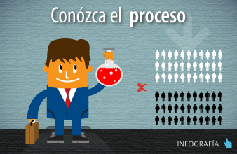

Financiación de posgrados
Los profesionales colombianos interesados en estudiar una maestría, doctorado y especializaciones en el exterior, esta última solo en área de la salud,
pueden contar con nuestro Programa Crédito-beca.
Este es un modelo de apoyo único en Colombia que le permite al estudiante solicitar un préstamo y obtener una condonación del 50% o el 25%, sobre la deuda,
según su área de estudio. Este programa solo financia programas presenciales y de tiempo completo y tiene como criterio único de selección la excelencia académica
del candidato y del programa que va a adelantar.
En qué consiste el crédito
- Los estudiantes pueden solicitar US$ 25.000 por año, máximo dos años, es decir, hasta un tope de US$ 50.000.
- Es un préstamo en dólares americanos
- Las tasas de interés son:
- - Durante el periodo de estudios: 6%
- - Durante el periodo de amortización: 8%
- - Periodo de amortización acelerado: 13%
- Requiere 2 codeudores
En qué consiste la beca
Si el estudiante regresa a Colombia, obtiene el título para el cual COLFUTURO le financió sus estudios y permanece en el país de 3 a 5 años, podrá obtener el siguiente porcentaje de condonación sobre la deuda:
- El 50% para los estudios en todas las áreas de estudio.
- (excepto Administración de Empresas).
- El 25% de la deuda para estudiantes que adelantan estudios de maestría en administración.
- El 10% adicional si el beneficiario se vincula laboralmente tiempo completo a una entidad pública, académica o de investigación.
Contamos con más de 50 convenios con entidades y universidades del exterior que aumentan los beneficios económicos para nuestros estudiantes.
Ventajas del Crédito-beca
- El estudiante tiene la libertdad de escoger el programa de estudios y el país donde desea estudiar.
- No hay límite de edad.
- Pueden participar estudiantes que inicien o continúen sus estudios.
- Pueden participar los estudiantes que ya están en el exterior.
- Permite cofinanciación.
- Los estudiantes tiene autonomía para distribuir el monto prestado.
- Al finalizar sus estudios, los estudiantes cuentan con un año de gracia donde no deben hacer pagos y pueden permanecer en el exterior haciendo una práctica laboral.
- A su regreso, los estudiantes cuentan con un servicio de Intermediación Laboral que los guiará en su proceso de ubicación laboral.
- Contamos con más de 50 convenios que se traducen en beneficios económicos adicionales a los del crédito-beca.
Requisitos para postularse al programa
- Ser colombiano.
- Tener un título de pregrado. Si no se ha graduado, es indispensable una comunicación de la universidad donde se certifique que está cursando último semestre. Para los programas de doble titulación pregrado-maestría, debe presentar una carta de la universidad en Colombia donde se avala o aprueba la doble titulación.
- Dominar un segundo idioma. Incluso para personas que van a estudiar en un país
hispanohablante. estos son los exámenes admitidos:
Inglés IELTS 6.5
TOEFL IBT 80
TOEIC: Listening 490, Reading 455, Speaking 200, Writing 200Francés Diplôme Approfondi de Langue Française C1 Alemán Goethe-Zertifikat C1
Test Deutsch als Fremdsprache (TestDaf)
Prüfung Wirtschaftsdeutsch International (PWD)Italiano Diploma Commerciale di Lingua Italiana
Certificato di Conoscenza delia Lingua Italiana. CELI 4 - Livello 4Portugués CELPE-Bras Avançado Mandarín HSK V Catalán Nivell de suficiéncia (C) Ruso TORFL/ÒÐÊÈ III Test of Russian as a Foreign Language Tercero/Tretii - Tener una carta de admisión al posgrado. O una comunicación por parte de la universidad que certifique que está adelantando el proceso de admisión. Estos son los documentos admitidos.
- Diligenciar el formulario en línea. Y adjuntar todos los documentos solicitados antes del cierre de la convocatoria.
- Consignar $50.000. A nombe de COLFUTURO antes del cierre de la convocatoria, en la cuenta corriente de Bancolombia Nº 039145400-00.
Los beneficiarios de COLFUTURO pueden participar nuevamente en la convocatoria siempre y cuando vayan a cursar un estudio superior al
anterior y hayan cancelado la totalidad de su primer crédito-beca.
Si su solicitud de apoyo a COLFUTURO no está completa, o no cumple alguno de los anteriores requisitos, no será considerada en el proceso de selección. Por esta razón
le recomendamos aplazar su solicitud un año y subsanar en ese tiempo lo que aún le falte.
Convenios establecidos
Con el propósito de que cada dólar que COLFUTURO entregue se multiplique para sus beneficiarios, en los últimos años se han firmado una serie
de convenios con instituciones educativas y universidades.
A la fecha, COLFUTURO tiene 51 convenios en los que se ofrecen descuentos en matrícula que van desde
el 10 hasta el 100%, o que contribuyen a los gastos de sostenimiento mientras el estudiante está en el exterior.
Revise la lista completa de convenios...
QUÉ OFRECE COLFUTURO
Así selecciona COLFUTURO a los beneficiarios
Nuestros Semilleros hablan

“La ayuda que me brindó COLFUTURO fue indispensable en el proceso que lleve acabo para realizar mis posgrado en Alemania. Estuvieron conmigo incondicionalmente de comienzo a fin.” - Nelson Cuevas Valderrama

“La ayuda que me brindó COLFUTURO fue indispensable en el proceso que lleve acabo para realizar mis posgrado en Alemania.” - Natalia Barón
“La ayuda que me brindó COLFUTURO fue indispensable en el proceso que lleve acabo para realizar mis posgrado en Alemania. Estuvieron conmigo incondicionalmente de comienzo a fin.” - Nelson Cuevas Valderrama